Next: Dispersion GUI mode - Up: The relaxation dispersion auto-analysis Previous: Dispersion GUI mode - Contents Index
The standard way for handling experimental NMR data for starting a relaxation dispersion analysis in the relax GUI is to load the peak intensity values (either height or volume) from a peak list.
For a list of all the currently supported peak list formats, see the spectrum.read_intensities user function documentation in section 17.2.215 on page ![[*]](crossref.png) .
.
Note that relax also accepts pre-fitted or pre-calculated
R2eff or
R1ρ values via the relax_disp.r2eff_read and relax_disp.r2eff_read_spin user functions (see section 17.2.174 on page and section 17.2.175 on page respectively), however this is not the standard way of using the GUI.
As this is not tested, if you decide to work with pre-calculated relaxation rates please report any bugs encountered as described in section 3.3 on page .
To access the user functions, click on ``User functions→relax_disp→r2eff_read'' or ``User functions→relax_disp→r2eff_read_spin''.
In this tutorial, the Sparky formatted peak lists in the test_suite/shared_data/dispersion/Hansen/500_MHz and test_suite/shared_data/dispersion/Hansen/800_MHz directories will be loaded. First click on the ``Add'' button in the ``Spectra list'' GUI element. A warning message will appear as the spins have not yet been named, spin names were not present in the fake_sequence.in file, hence they cannot be matched to the data in the peak lists:
|
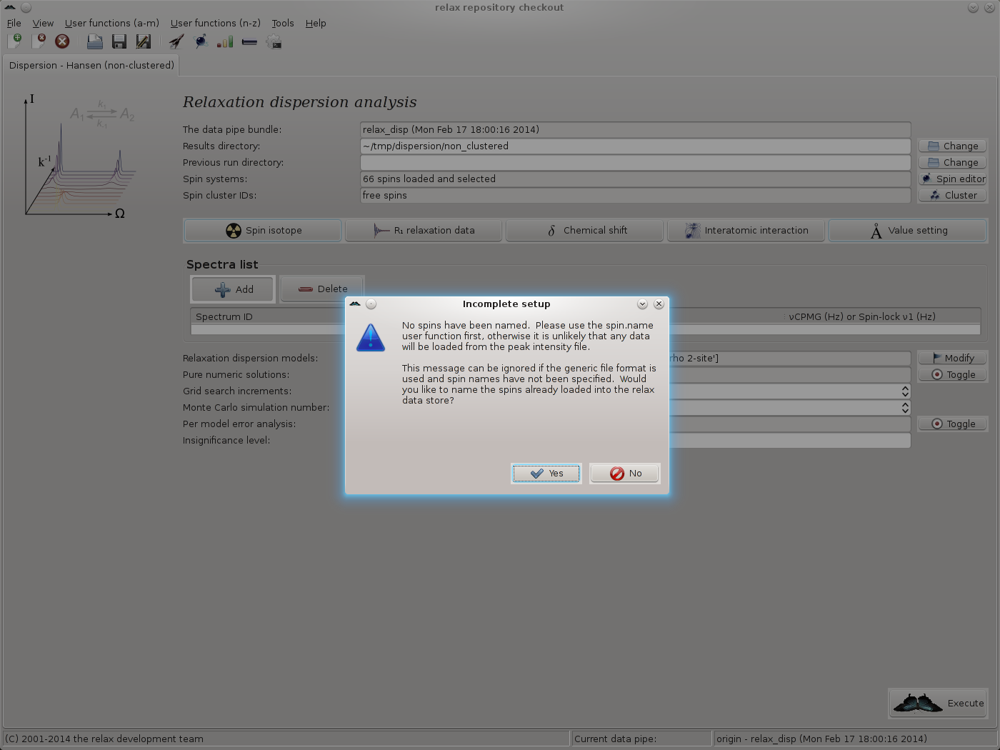
|
Simply click on ``Yes'' to allow the spins to be named in the next step. The spin.name user function wizard page should now appear. As all data is from 15N spins and these spins have been named as ``N'' in the Sparky peak lists, set the new spin name to ``N'' and click on ``Next'':
|
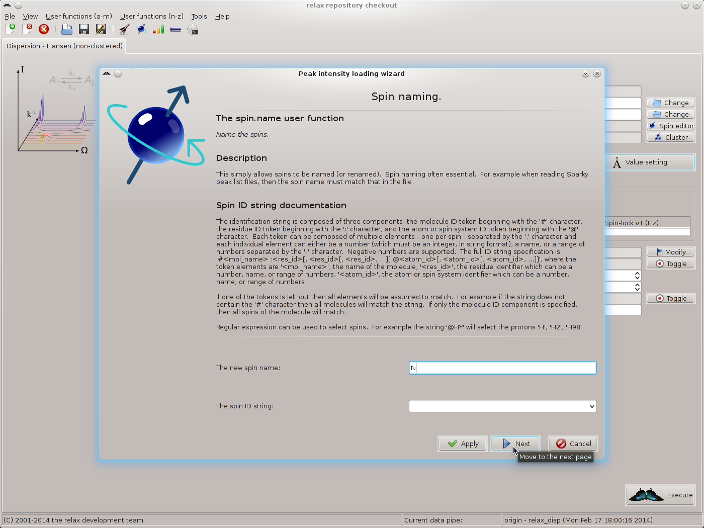
|
The spectrum.read_intensities user function wizard page should appear. To help understand the next steps of the peak intensity loading wizard, note the following table which summarises the peak list metadata for this analysis:
|
File name |
Spectrum ID | Spectrometer | νCPMG | Replicate | |
| frq. (MHz) | (Hz) | IDs | |||
|
500_MHz/reference.in_sparky |
500_ref | 500.0 | None | ||
| 500_MHz/66.667.in_sparky | 500_66.667 | 500.0 | 66.6666 | ||
| 500_MHz/133.33.in_sparky | 500_133.33 | 500.0 | 133.3333 | 500_133.33b | |
| 500_MHz/133.33.in.bis_sparky | 500_133.33b | 500.0 | 133.3333 | 500_133.33 | |
| 500_MHz/200.in_sparky | 500_200.00 | 500.0 | 200.0000 | ||
| 500_MHz/266.67.in_sparky | 500_266.67 | 500.0 | 266.6666 | ||
| 500_MHz/333.33.in_sparky | 500_333.33 | 500.0 | 333.3333 | ||
| 500_MHz/400.in_sparky | 500_400.00 | 500.0 | 400.0000 | ||
| 500_MHz/466.67.in_sparky | 500_466.67 | 500.0 | 466.6666 | ||
| 500_MHz/533.33.in_sparky | 500_533.33 | 500.0 | 533.3333 | 500_533.33b | |
| 500_MHz/533.33.in.bis_sparky | 500_533.33b | 500.0 | 533.3333 | 500_533.33 | |
| 500_MHz/600.in_sparky | 500_600.00 | 500.0 | 600.0000 | ||
| 500_MHz/666.67.in_sparky | 500_666.67 | 500.0 | 666.6666 | ||
| 500_MHz/733.33.in_sparky | 500_733.33 | 500.0 | 733.3333 | ||
| 500_MHz/800.in_sparky | 500_800.00 | 500.0 | 800.0000 | ||
| 500_MHz/866.67.in_sparky | 500_866.67 | 500.0 | 866.6666 | ||
| 500_MHz/933.33.in_sparky | 500_933.33 | 500.0 | 933.3333 | 500_933.33b | |
| 500_MHz/933.33.in.bis_sparky | 500_933.33b | 500.0 | 933.3333 | 500_933.33 | |
| 500_MHz/1000.in_sparky | 500_1000.0 | 500.0 | 1000.0000 | ||
| 800_MHz/reference.in_sparky | 800_ref | 800.0 | None | ||
| 800_MHz/66.667.in_sparky | 800_66.667 | 800.0 | 66.6666 | ||
| 800_MHz/133.33.in_sparky | 800_133.33 | 800.0 | 133.3333 | 800_133.33b | |
| 800_MHz/133.33.in.bis_sparky | 800_133.33b | 800.0 | 133.3333 | 800_133.33 | |
| 800_MHz/200.in_sparky | 800_200.00 | 800.0 | 200.0000 | ||
| 800_MHz/266.67.in_sparky | 800_266.67 | 800.0 | 266.6666 | ||
| 800_MHz/333.33.in_sparky | 800_333.33 | 800.0 | 333.3333 | ||
| 800_MHz/400.in_sparky | 800_400.00 | 800.0 | 400.0000 | ||
| 800_MHz/466.67.in_sparky | 800_466.67 | 800.0 | 466.6666 | ||
| 800_MHz/533.33.in_sparky | 800_533.33 | 800.0 | 533.3333 | 800_533.33b | |
| 800_MHz/533.33.in.bis_sparky | 800_533.33b | 800.0 | 533.3333 | 800_533.33 | |
| 800_MHz/600.in_sparky | 800_600.00 | 800.0 | 600.0000 | ||
| 800_MHz/666.67.in_sparky | 800_666.67 | 800.0 | 666.6666 | ||
| 800_MHz/733.33.in_sparky | 800_733.33 | 800.0 | 733.3333 | ||
| 800_MHz/800.in_sparky | 800_800.00 | 800.0 | 800.0000 | ||
| 800_MHz/866.67.in_sparky | 800_866.67 | 800.0 | 866.6666 | ||
| 800_MHz/933.33.in_sparky | 800_933.33 | 800.0 | 933.3333 | 800_933.33b | |
| 800_MHz/933.33.in.bis_sparky | 800_933.33b | 800.0 | 933.3333 | 800_933.33 | |
| 800_MHz/1000.in_sparky | 800_1000.0 | 800.0 | 1000.0000 | ||
For all of these files, the experiment type is SQ CPMG and the relaxation delay time is 30 ms. All files are located in the test_suite/shared_data/dispersion/Hansen base directory.
To simplify the loading of the data, all of the 500 MHz data will be read simultaneously (followed by all of the 800 MHz data). Firstly, to select all of the 500 MHz files, click on the button at the end of the ``file name(s)'' GUI element. This will launch the multiple file selection window:
|
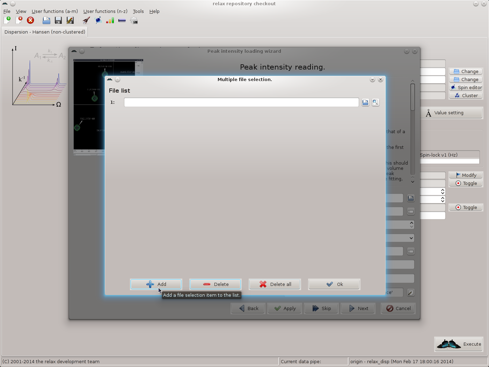
|
Add the first file by typing the file name or clicking on the file selection button to the right of the file input field and choosing the file. A preview button is included to allow the file to be checked. Then click on the ``Add'' button to insert a new file selection item, add the next file, and continue until completion. You should now see 19 file names:
|
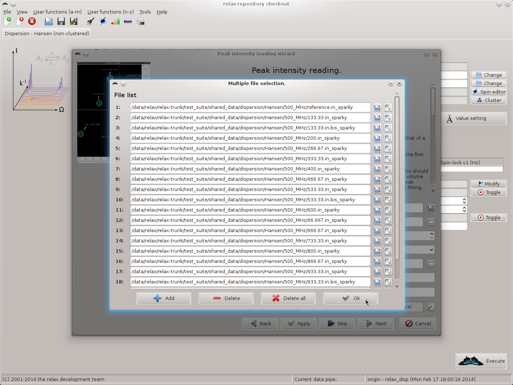
|
Click on ``OK'' to return to the spectrum.read_intensities user function wizard page. Next, the spectrum IDs should be set. For this, click on the button to the far right of the ``spectrum ID string'' GUI element. Click on ``Add'' and fill in the spectrum IDs corresponding to the files selected. As 19 files exist for the 500 MHz data, 19 spectrum IDs should be added. When complete you should see:
|
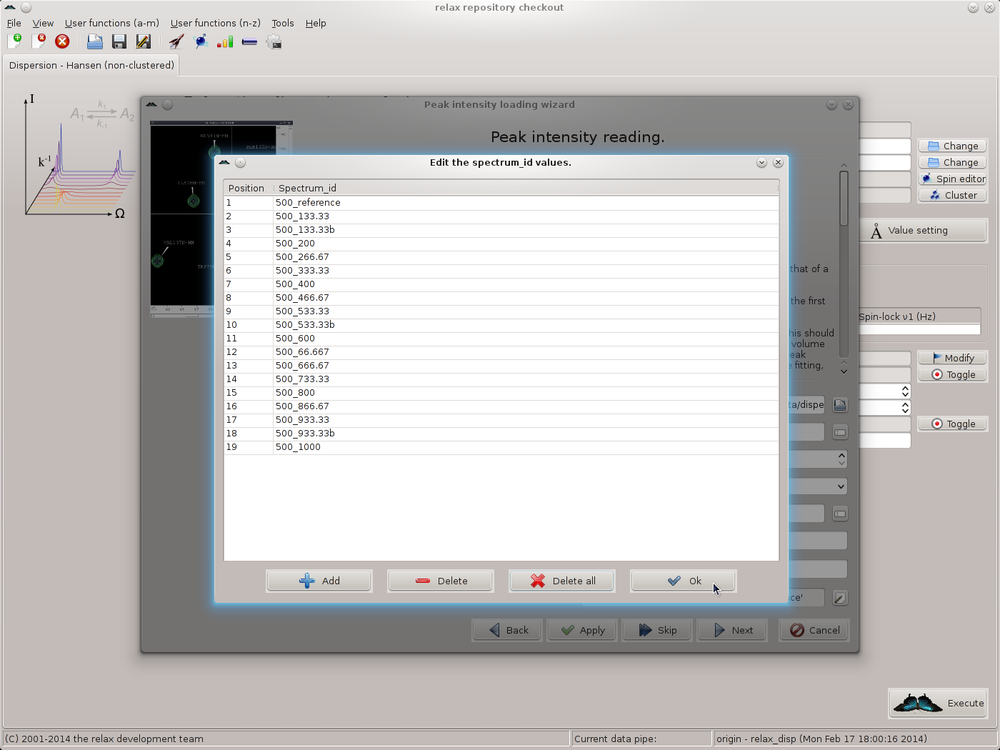
|
Click on ``OK'' to return to the spectrum.read_intensities user function wizard page.
There is a shortcut to these previous steps in that the file names and spectrum IDs can be manually typed into the input elements of the spectrum.read_intensities user function wizard page. For the file names, assuming relax is installed in the base directory /data/relax/relax-trunk and a Unix-like system is being used, the following text can be added:
[numbers=none] ['/data/relax/relax-trunk/test_suite/shared_data/dispersion/Hansen/500_MHz/reference.in_sparky', '/data/relax/relax-trunk/test_suite/shared_data/dispersion/Hansen/500_MHz/133.33.in_sparky', '/data/relax/relax-trunk/test_suite/shared_data/dispersion/Hansen/500_MHz/133.33.in.bis_sparky', '/data/relax/relax-trunk/test_suite/shared_data/dispersion/Hansen/500_MHz/200.in_sparky', '/data/relax/relax-trunk/test_suite/shared_data/dispersion/Hansen/500_MHz/266.67.in_sparky', '/data/relax/relax-trunk/test_suite/shared_data/dispersion/Hansen/500_MHz/333.33.in_sparky', '/data/relax/relax-trunk/test_suite/shared_data/dispersion/Hansen/500_MHz/400.in_sparky', '/data/relax/relax-trunk/test_suite/shared_data/dispersion/Hansen/500_MHz/466.67.in_sparky', '/data/relax/relax-trunk/test_suite/shared_data/dispersion/Hansen/500_MHz/533.33.in_sparky', '/data/relax/relax-trunk/test_suite/shared_data/dispersion/Hansen/500_MHz/533.33.in.bis_sparky', '/data/relax/relax-trunk/test_suite/shared_data/dispersion/Hansen/500_MHz/600.in_sparky', '/data/relax/relax-trunk/test_suite/shared_data/dispersion/Hansen/500_MHz/66.667.in_sparky', '/data/relax/relax-trunk/test_suite/shared_data/dispersion/Hansen/500_MHz/666.67.in_sparky', '/data/relax/relax-trunk/test_suite/shared_data/dispersion/Hansen/500_MHz/733.33.in_sparky', '/data/relax/relax-trunk/test_suite/shared_data/dispersion/Hansen/500_MHz/800.in_sparky', '/data/relax/relax-trunk/test_suite/shared_data/dispersion/Hansen/500_MHz/866.67.in_sparky', '/data/relax/relax-trunk/test_suite/shared_data/dispersion/Hansen/500_MHz/933.33.in_sparky', '/data/relax/relax-trunk/test_suite/shared_data/dispersion/Hansen/500_MHz/933.33.in.bis_sparky', '/data/relax/relax-trunk/test_suite/shared_data/dispersion/Hansen/500_MHz/1000.in_sparky']
The spectrum IDs can be added by copying and pasting the following text, making sure all text is on one line:
[numbers=none] ['500_reference', '500_133.33', '500_133.33b', '500_200', '500_266.67', '500_333.33', '500_400', '500_466.67', '500_533.33', '500_533.33b', '500_600', '500_66.667', '500_666.67', '500_733.33', '500_800', '500_866.67', '500_933.33', '500_933.33b', '500_1000']
To see if the data has been correctly entered, click on the buttons to the right of the GUI elements. You should see the files and spectrum IDs correctly listed in the multiple file selection window and the sequence input window respectively.
For the SQ CPMG data of this tutorial, none of the other settings in the spectrum.read_intensities user function wizard page need to be changed. By clicking on the ``Apply'' button, the 500 MHz data will be loaded but the wizard will stay on the same page. Note that the contents of the main relax window will have changed. Clicking ``Apply'' rather than ``Next'' will allow the 800 MHz data to be loaded next. Change all of the file names and spectrum IDs for the 800 MHz and click on the ``Next'' button to read the data and to move to the next wizard page. This will be the page for specifying the types of errors to use:
|
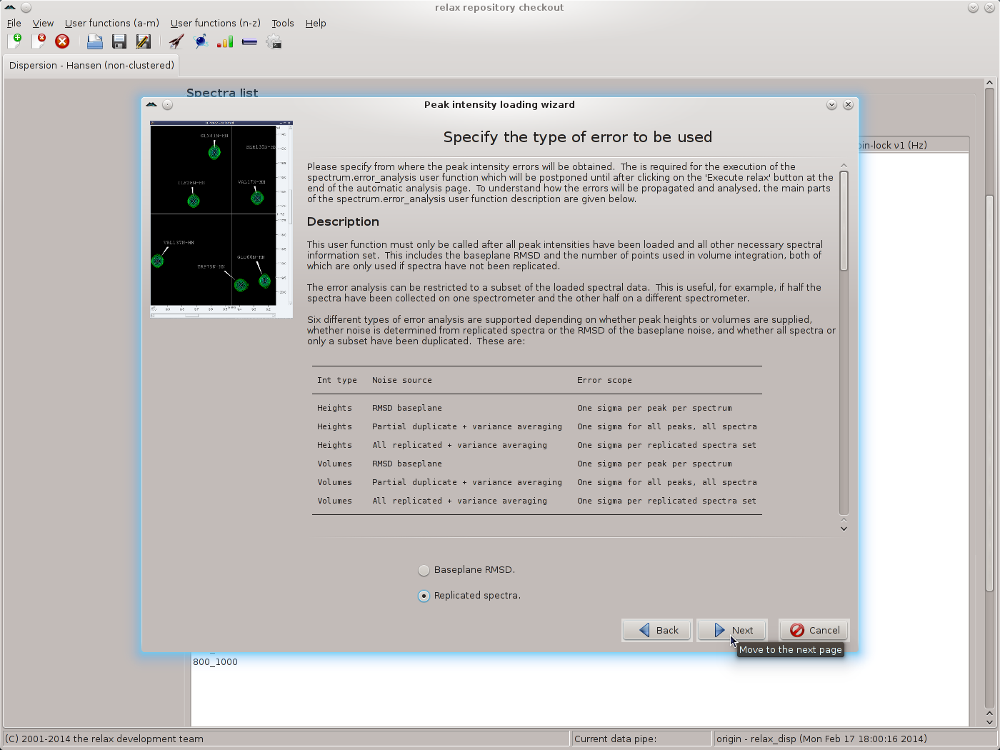
|
As replicated spectra have been collected, set the value to ``Replicated spectra'' and then click the ``Next'' button. Select the pairs of spectra which have been replicated and click the ``Apply'' button to allow all of the replicates to be specified:
|
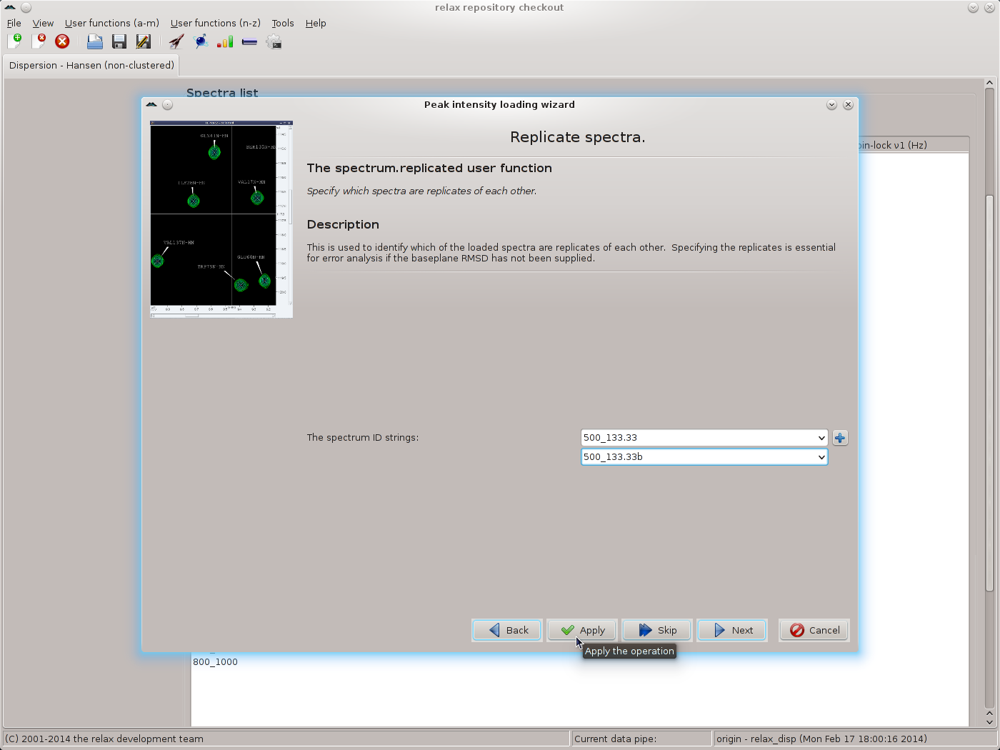
|
Repeat for each pair of replicates, then click the ``Next'' button to move to the next wizard page - the relax_disp.exp_type user function. Here the tedious operation of labelling all spectrum IDs as being ``Single quantum (SQ) CPMG-type data'' must be performed. Select the spectrum ID and the SQ CPMG data type and click on the ``Apply'' button, repeating for each ID:
|
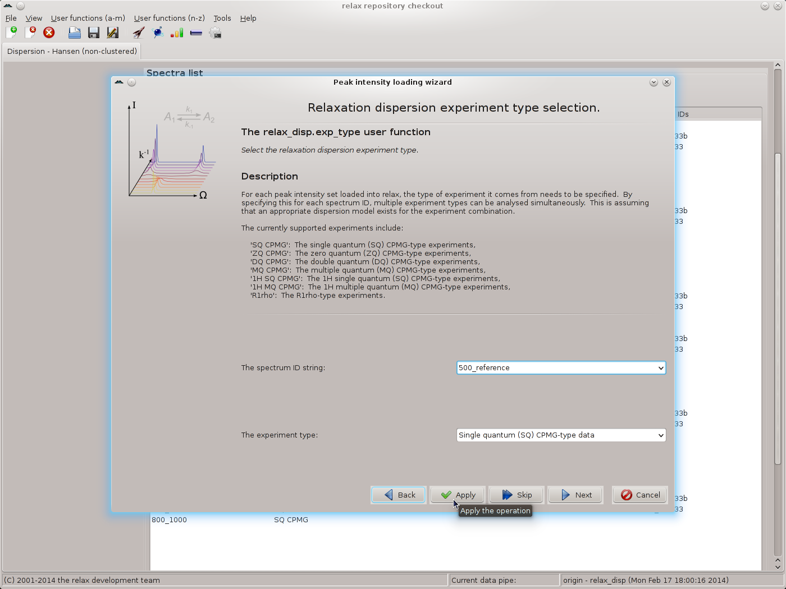
|
Click the ``Next'' button when finished. The next wizard page will be that of the spectrometer.frequency user function. Here the exact spectrometer frequency values should be specified. These values should be those of the ``sfrq'' parameter in the Varian procpar file or the ``SFO1'' parameter in the Bruker acqus file. As the exact values are not known for the data of this tutorial, the values of 500.0 and 800.0 MHz will be used:
|
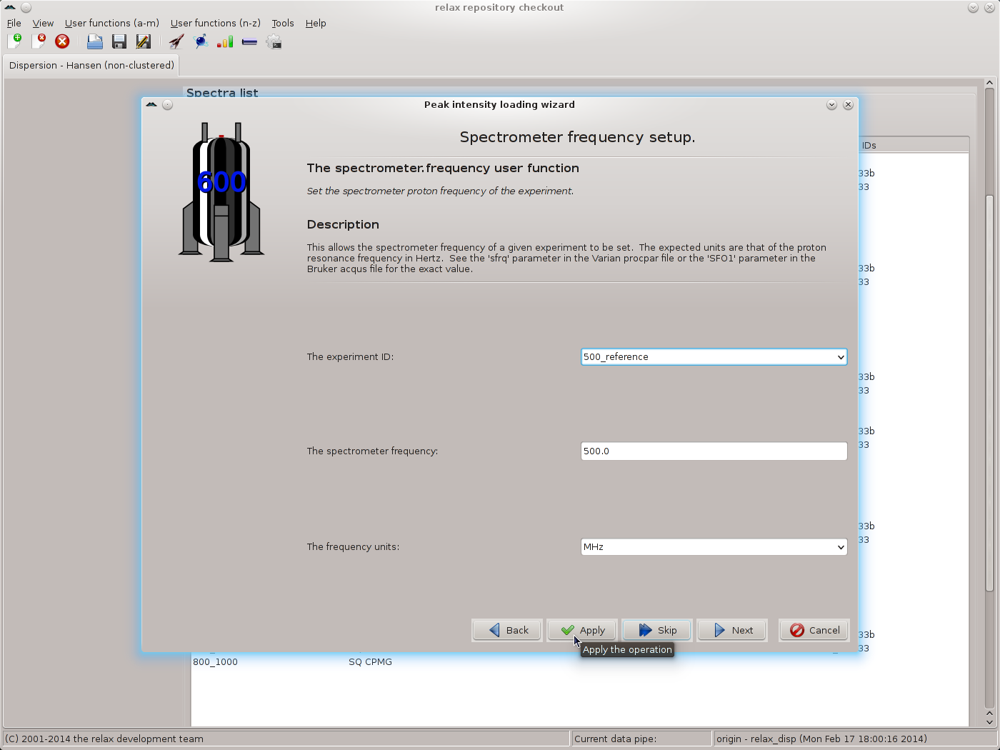
|
Again use the ``Apply'' button to set the value, repeating for all matching spectrum IDs. Change the frequency to 800.0 MHz and continue for the next set of matching spectrum IDs. Finally click on ``Next'' to move to the next wizard page. If you have not used the exact values from the files, the relax controller window will appear with the warning:
[language=relax_log,numbers=none] relax> spectrometer.frequency(id='500_reference', frq=500.0, units='MHz') RelaxWarning: The precise spectrometer frequency should be supplied, a value such as 500000000 or 5e8 for a 500 MHz machine is not acceptable. Please see the 'sfrq' parameter in the Varian procpar file or the 'SFO1' parameter in the Bruker acqus file.
The controller window can be safely closed. Though, to avoid frustration when setting the frequency for all spectrum IDs, it may be better to shift the window to the side of the screen. The next wizard page is that of the relax_disp.relax_time user function. Set the time to 0.03 and click on the ``Apply'' button for all spectrum IDs, one after the other:
|
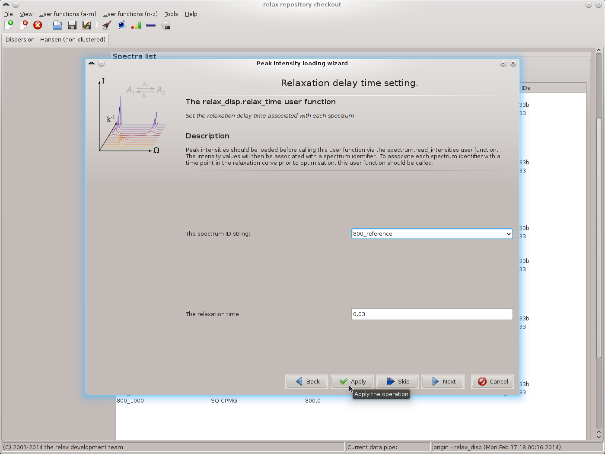
|
Click on ``Next'' to move to the relax_disp.cpmg_frq user function wizard page. If R1ρ data has been collected, the relax_disp.spin_lock_field user function wizard page would appear instead. For the reference spectrum IDs, leave the CPMG frequency value blank and click on ``Apply'':
|
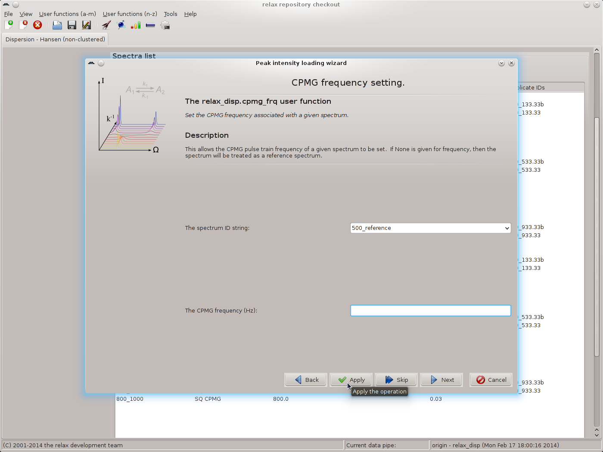
|
This will label these spectra as the reference. For all other spectrum IDs, use the CPMG frequencies as given in the table above, using ``Apply'' to execute the relax_disp.cpmg_frq user function while staying on the same wizard page. Click on ``Next'' to finish. You should now see the main relax window:
|
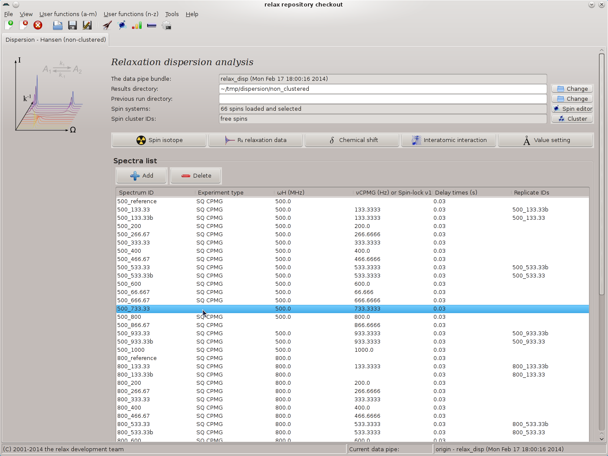
|
In this screenshot it can be seen that some of the metadata is missing. This often happens due to the large amounts of metadata specified in the peak intensity loading wizard and human error. The missing metadata can now easily be filled in by right clicking on the corresponding row. For example here the ``500_733.33'' spectrum ID does not have the experiment type set. Simply right click and select the ``Set the experiment type'' menu entry from the popup menu. For the missing spectrometer frequency for the ``500_866.67'' spectrum ID, the ``Set the spectrometer frequency'' menu entry can be used. For the missing νCPMG value for the ``800_133.33'' spectrum ID, the ``Set the CPMG pulse frequency νCPMG'' menu entry can be used. All of the metadata should be double and triple checked and fixed where required using the popup menu. Any errors in this metadata would be catastrophic for the subsequent dispersion analysis.